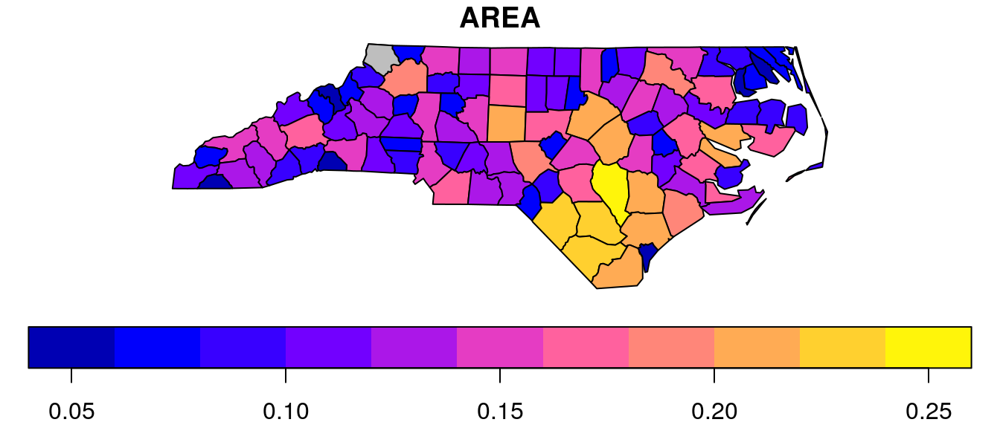
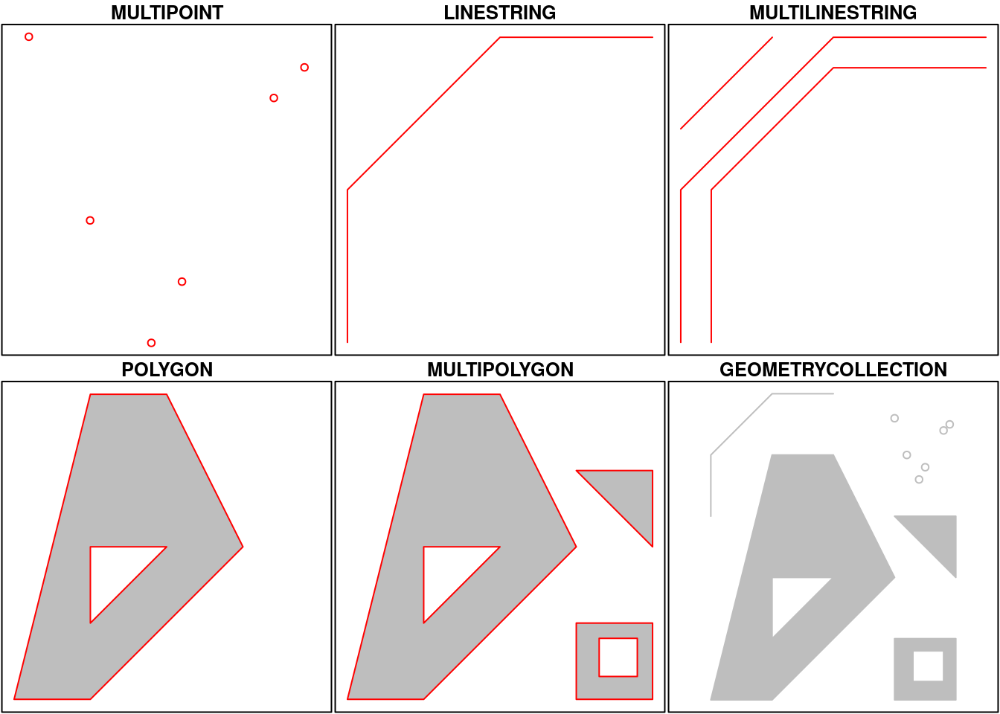
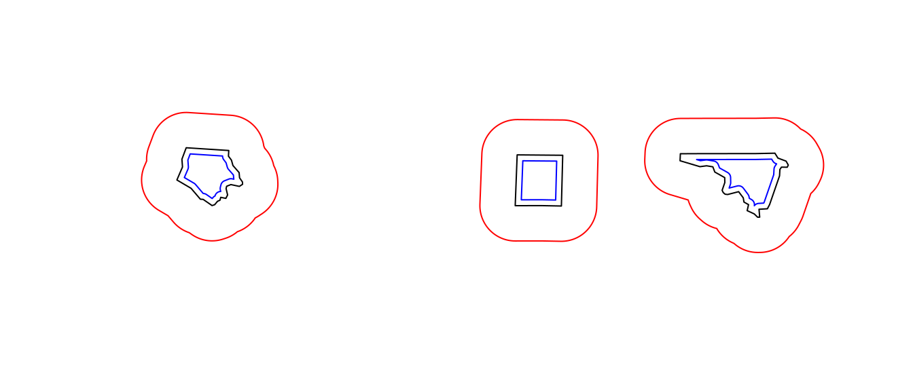
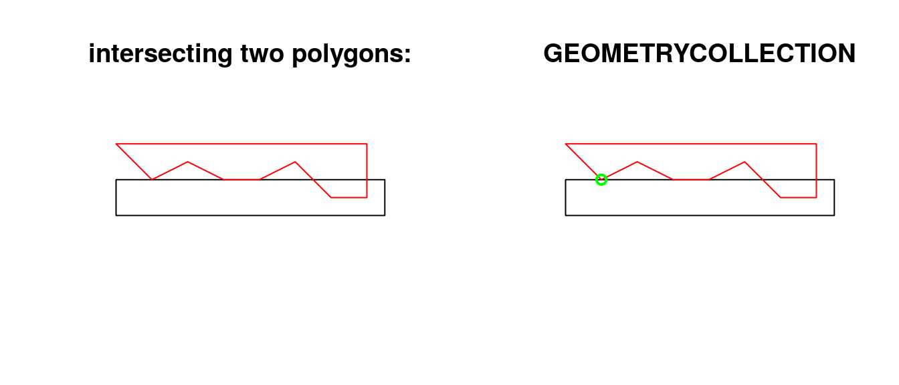

- Simple Features for R
Simple features or simple feature access refers to a formal standard that describes how objects in the real world can be represented in computers, with emphasis on the spatial geometry of these objects. It also describes how such objects can be stored in and retrieved from databases, and which geometrical operations should be defined for them.
The standard is widely implemented in spatial databases (such as PostGIS), commercial GIS (e.g., ESRI ArcGIS) and forms the vector data basis for libraries such as GDAL. A subset of simple features forms the GeoJSON standard.
R has well-supported classes for storing spatial data (sp) and interfacing to the above mentioned environments (rgdal, rgeos), but has so far lacked a complete implementation of simple features, making conversions at times convoluted, inefficient or incomplete. The package sf tries to fill this gap, and aims at succeeding sp in the long term.
This vignette:
- explains what is meant by features, and by simple features
- shows how they are implemented in R
- provides examples of how you can work with them
- shows how they can be read from and written to external files or resources
- discusses how they can be converted to and from sp objects
- shows how they can be used for meaningful spatial analysis
What is a feature?
A feature is thought of as a thing, or an object in the real world, such as a building or a tree. As is the case with objects, they often consist of other objects. This is the case with features too: a set of features can form a single feature. A forest stand can be a feature, a forest can be a feature, a city can be a feature. A satellite image pixel can be a feature, a complete image can be a feature too.
Features have a geometry describing where on Earth the feature is located, and they have attributes, which describe other properties. The geometry of a tree can be the delineation of its crown, of its stem, or the point indicating its centre. Other properties may include its height, color, diameter at breast height at a particular date, and so on.
The standard says: “A simple feature is defined by the OpenGIS Abstract specification to have both spatial and non-spatial attributes. Spatial attributes are geometry valued, and simple features are based on 2D geometry with linear interpolation between vertices.” We will see soon that the same standard will extend its coverage beyond 2D and beyond linear interpolation. Here, we take simple features as the data structures and operations described in the standard.
Dimensions
All geometries are composed of points. Points are coordinates in a 2-, 3- or 4-dimensional space. All points in a geometry have the same dimensionality. In addition to X and Y coordinates, there are two optional additional dimensions:
- a Z coordinate, denoting altitude
- an M coordinate (rarely used), denoting some measure that is associated with the point, rather than with the feature as a whole (in which case it would be a feature attribute); examples could be time of measurement, or measurement error of the coordinates
The four possible cases then are:
- two-dimensional points refer to x and y, easting and northing, or longitude and latitude, we refer to them as XY
- three-dimensional points as XYZ
- three-dimensional points as XYM
- four-dimensional points as XYZM (the third axis is Z, fourth M)
Simple feature geometry types
The following seven simple feature types are the most common, and are for instance the only ones used for GeoJSON:
| type | description |
|---|---|
POINT |
zero-dimensional geometry containing a single point |
LINESTRING |
sequence of points connected by straight, non-self intersecting line pieces; one-dimensional geometry |
POLYGON |
geometry with a positive area (two-dimensional); sequence of points form a closed, non-self intersecting ring; the first ring denotes the exterior ring, zero or more subsequent rings denote holes in this exterior ring |
MULTIPOINT |
set of points; a MULTIPOINT is simple if no two Points in the MULTIPOINT are equal |
MULTILINESTRING |
set of linestrings |
MULTIPOLYGON |
set of polygons |
GEOMETRYCOLLECTION |
set of geometries of any type except GEOMETRYCOLLECTION |
Each of the geometry types can also be a (typed) empty set, containing zero coordinates (for POINT the standard is not clear how to represent the empty geometry). Empty geometries can be thought of being the analogue to missing (NA) attributes, NULL values or empty lists.
The remaining geometries 10 are more rare, but increasingly find implementations:
| type | description |
|---|---|
CIRCULARSTRING |
The CIRCULARSTRING is the basic curve type, similar to a LINESTRING in the linear world. A single segment requires three points, the start and end points (first and third) and any other point on the arc. The exception to this is for a closed circle, where the start and end points are the same. In this case the second point MUST be the center of the arc, ie the opposite side of the circle. To chain arcs together, the last point of the previous arc becomes the first point of the next arc, just like in LINESTRING. This means that a valid circular string must have an odd number of points greated than 1. |
COMPOUNDCURVE |
A compound curve is a single, continuous curve that has both curved (circular) segments and linear segments. That means that in addition to having well-formed components, the end point of every component (except the last) must be coincident with the start point of the following component. |
CURVEPOLYGON |
Example compound curve in a curve polygon: CURVEPOLYGON(COMPOUNDCURVE(CIRCULARSTRING(0 0,2 0, 2 1, 2 3, 4 3),(4 3, 4 5, 1 4, 0 0)), CIRCULARSTRING(1.7 1, 1.4 0.4, 1.6 0.4, 1.6 0.5, 1.7 1) ) |
MULTICURVE |
A MultiCurve is a 1-dimensional GeometryCollection whose elements are Curves, it can include linear strings, circular strings or compound strings. |
MULTISURFACE |
A MultiSurface is a 2-dimensional GeometryCollection whose elements are Surfaces, all using coordinates from the same coordinate reference system. |
CURVE |
A Curve is a 1-dimensional geometric object usually stored as a sequence of Points, with the subtype of Curve specifying the form of the interpolation between Points |
SURFACE |
A Surface is a 2-dimensional geometric object |
POLYHEDRALSURFACE |
A PolyhedralSurface is a contiguous collection of polygons, which share common boundary segments |
TIN |
A TIN (triangulated irregular network) is a PolyhedralSurface consisting only of Triangle patches. |
TRIANGLE |
A Triangle is a polygon with 3 distinct, non-collinear vertices and no interior boundary |
Note that CIRCULASTRING, COMPOUNDCURVE and CURVEPOLYGON are not described in the SFA standard, but in the SQL-MM part 3 standard. The descriptions above were copied from the PostGIS manual.
Coordinate reference system
Coordinates can only be placed on the Earth’s surface when their coordinate reference system (CRS) is known; this may be an elipsoidal CRS such as WGS84, a projected, two-dimensional (Cartesian) CRS such as a UTM zone or Web Mercator, or a CRS in three-dimensions or including time. Similarly, M-coordinates need an attribute reference system, e.g. a measurement unit.
How simple features in R are organized
Package sf represents simple features as native R objects. All functions and methods in sf are prefixed by st_, so that they are easily found by command-line completion. Simple features are implemented as R native data, using simple data structures (S3 classes, lists, matrix, vector). Typical use involves reading, manipulating and writing of sets of features, with attributes and geometries.
As attributes are typically stored in data.frame objects (or the very similar tbl_df), we will also store feature geometries in a data.frame column. Since geometries are not single-valued, they are put in a list-column, a list of length equal to the number of records in the data.frame, with each list element holding the simple feature geometry of that feature. The three classes used to represent simple features are:
sf, the table (data.frame) with feature attributes and feature geometries, which containssfc, the list-column with the geometries for each feature (record), which is composed ofsfg, the feature geometry of an individual simple feature.
We will now discuss each of these three classes.
sf: objects with simple features
As we usually do not work with geometries of single simple features, but with datasets consisting of sets of features with attributes, the two are put together in sf (simple feature) objects. The following command reads the nc dataset from a file that is contained in the sf package:
library(sf)
nc <- st_read(system.file("shape/nc.shp", package="sf"))
## Reading layer `nc' from data source `/home/edzer/git/sfr/inst/shape/nc.shp' using driver `ESRI Shapefile'
## converted into: MULTIPOLYGON
## Simple feature collection with 100 features and 14 fields
## geometry type: MULTIPOLYGON
## dimension: XY
## bbox: xmin: -84.32385 ymin: 33.88199 xmax: -75.45698 ymax: 36.58965
## epsg (SRID): 4267
## proj4string: +proj=longlat +datum=NAD27 +no_defs(Note that users will not use but give a directly, and that shapefiles consist of more than one file, all with identical basename, which reside in the same directory.) The short report printed gives the file name, the driver (ESRI Shapefile), mentions that there are 100 features (records, represented as rows) and 14 fields (attributes, represented as columns). This object is of class
class(nc)
## [1] "sf" "data.frame"meaning it extends (and “is” a) data.frame, but with a single list-column with geometries, which is held in the column with name
attr(nc, "sf_column")
## [1] "geometry"If we print the first three features, we see their attribute values and an abridged version of the geometry
print(nc[9:15], n = 3)which would give the following output:

In the output we see:
- in green a simple feature: a single record, or
data.framerow, consisting of attributes and geometry - in blue a single simple feature geometry (an object of class
sfg) - in red a simple feature list-column (an object of class
sfc, which is a column in thedata.frame) - that although geometries are native R objects, they are printed as well-known text
Methods for sf objects are
methods(class = "sf")
## [1] arrange_ cbind coerce distinct_ filter_
## [6] gather_ group_by_ initialize mutate_ plot
## [11] print rbind rename_ select_ [
## [16] show slice_ slotsFromS3 spread_ st_as_sf
## [21] st_bbox st_cast st_crs<- st_crs st_drop_zm
## [26] st_geometry<- st_geometry st_transform summarise_ transmute_
## see '?methods' for accessing help and source codeIt is also possible to create data.frame objects with geometry list-columns that are not of class sf, e.g. by
nc.no_sf <- as.data.frame(nc)
class(nc.no_sf)
## [1] "data.frame"However, such objects:
- no longer register which column is the geometry list-column
- no longer have a plot method, and
- lack all of the other dedicated methods listed above for class
sf
sfc: simple feature geometry list-column
The column in the sf data.frame that contains the geometries is a list, of class sfc. We can retrieve the geometry list-column in this case by nc$geom or nc[[15]], but the more general way uses st_geometry:
(nc.geom <- st_geometry(nc))
## Geometry set for 100 features
## geometry type: MULTIPOLYGON
## dimension: XY
## bbox: xmin: -84.32385 ymin: 33.88199 xmax: -75.45698 ymax: 36.58965
## epsg (SRID): 4267
## proj4string: +proj=longlat +datum=NAD27 +no_defs
## First 5 geometries:
## MULTIPOLYGON(((-81.4727554321289 36.23435592651...
## MULTIPOLYGON(((-81.2398910522461 36.36536407470...
## MULTIPOLYGON(((-80.4563446044922 36.24255752563...
## MULTIPOLYGON(((-76.0089721679688 36.31959533691...
## MULTIPOLYGON(((-77.2176666259766 36.24098205566...Geometries are printed in abbreviated form, but we can can view a complete geometry by selecting it, e.g. the first one by
nc.geom[[1]]
## MULTIPOLYGON(((-81.4727554321289 36.2343559265137, -81.5408401489258 36.2725067138672, -81.5619812011719 36.2735939025879, -81.6330642700195 36.3406867980957, -81.7410736083984 36.3917846679688, -81.6982803344727 36.4717788696289, -81.7027969360352 36.5193405151367, -81.6699981689453 36.5896492004395, -81.3452987670898 36.5728645324707, -81.347541809082 36.537914276123, -81.3247756958008 36.5136795043945, -81.3133239746094 36.4806976318359, -81.2662353515625 36.4372062683105, -81.2628402709961 36.4050407409668, -81.2406921386719 36.3794174194336, -81.2398910522461 36.365364074707, -81.2642440795898 36.3524131774902, -81.3289947509766 36.3635025024414, -81.3613739013672 36.3531608581543, -81.3656921386719 36.3390502929688, -81.354133605957 36.2997169494629, -81.3674545288086 36.2786979675293, -81.4063873291016 36.2850532531738, -81.4123306274414 36.2672920227051, -81.431037902832 36.2607192993164, -81.4528884887695 36.2395858764648, -81.4727554321289 36.2343559265137)))The way this is printed is called well-known text, and is part of the standards. The word MULTIPOLYGON is followed by three parenthesis, because it can consist of multiple polygons, in the form of MULTIPOLYGON(POL1,POL2), where POL1 might consist of an exterior ring and zero or more interior rings, as of (EXT1,HOLE1,HOLE2). Sets of coordinates are held together with parenthesis, so we get ((crds_ext)(crds_hole1)(crds_hole2)) where crds_ is a comma-separated set of coordinates of a ring. This leads to the case above, where MULTIPOLYGON(((crds_ext))) refers to the exterior ring (1), without holes (2), of the first polygon (3) - hence three parentheses.
We can see there is a single polygon with no rings:

but some of the polygons in this dataset have multiple exterior rings; they can be identified by
par(mar = c(0,0,1,0))
(w <- which(sapply(nc.geom, length) > 1))
## [1] 4 56 57 87 91 95
plot(nc[w,1], col = 2:7)
Following the MULTIPOLYGON datastructure, in R we have a list of lists of lists of matrices. For instance, we get the first 3 coordinate pairs of the second exterior ring (first ring is always exterior) for the geometry of feature 4 by
nc.geom[[4]][[2]][[1]][1:3,]
## [,1] [,2]
## [1,] -76.02717 36.55672
## [2,] -75.99866 36.55665
## [3,] -75.91192 36.54253Geometry columns have their own class,
class(nc.geom)
## [1] "sfc_MULTIPOLYGON" "sfc"Methods for geometry list-columns include
methods(class = 'sfc')
## [1] coerce format initialize Ops print
## [6] [ show slotsFromS3 st_as_binary st_as_text
## [11] st_bbox st_cast st_crs<- st_crs st_drop_zm
## [16] st_geometry str st_transform summary type_sum
## see '?methods' for accessing help and source codeCoordinate reference systems (st_crs and st_transform) are discussed in the section on coordinate reference systems. st_as_wkb and st_as_text convert geometry list-columns into well-known-binary or well-known-text, explained below. st_bbox retrieves the coordinate bounding box.
Attributes include
attributes(nc.geom)
## $n_empty
## [1] 0
##
## $crs
## $epsg
## [1] 4267
##
## $proj4string
## [1] "+proj=longlat +datum=NAD27 +no_defs"
##
## attr(,"class")
## [1] "crs"
##
## $class
## [1] "sfc_MULTIPOLYGON" "sfc"
##
## $precision
## [1] 0
##
## $bbox
## xmin ymin xmax ymax
## -84.32385 33.88199 -75.45698 36.58965Mixed geometry types
The class of nc.geom is c("sfc_MULTIPOLYGON", "sfc"): sfc is shared with all geometry types, and sft_TYPE with TYPE indicating the type of the particular geometry at hand.
There are two “special” types: GEOMETRYCOLLECTION, and GEOMETRY. GEOMETRYCOLLECTION indicates that each of the geometries may contain a mix of geometry types, as in
(mix <- st_sfc(st_geometrycollection(list(st_point(1:2))),
st_geometrycollection(list(st_linestring(matrix(1:4,2))))))
## Geometry set for 2 features
## geometry type: GEOMETRYCOLLECTION
## dimension: XY
## bbox: xmin: 1 ymin: 2 xmax: 2 ymax: 4
## epsg (SRID): NA
## proj4string: NA
## GEOMETRYCOLLECTION(POINT(1 2))
## GEOMETRYCOLLECTION(LINESTRING(1 3, 2 4))
class(mix)
## [1] "sfc_GEOMETRYCOLLECTION" "sfc"Still, the geometries are here of a single type.
The second GEOMETRY, indicates that the geometries in the geometry list-column are of varying type:
(mix <- st_sfc(st_point(1:2), st_linestring(matrix(1:4,2))))
## Geometry set for 2 features
## geometry type: GEOMETRY
## dimension: XY
## bbox: xmin: 1 ymin: 2 xmax: 2 ymax: 4
## epsg (SRID): NA
## proj4string: NA
## POINT(1 2)
## LINESTRING(1 3, 2 4)
class(mix)
## [1] "sfc_GEOMETRY" "sfc"These two are fundamentally different: GEOMETRY is a superclass without instances, GEOMETRYCOLLECTION is a geometry instance. GEOMETRY list-columns occur when we read in a data source with a mix of geometry types. GEOMETRYCOLLECTION is a single feature’s geometry: the intersection of two feature polygons may consist of points, lines and polygons, see the example below.
sfg: simple feature geometry
Simple feature geometry (sfg) objects carry the geometry for a single feature, e.g. a point, linestring or polygon.
Simple feature geometries are implemented as R native data, using the following rules
- a single POINT is a numeric vector
- a set of points, e.g. in a LINESTRING or ring of a POLYGON is a
matrix, each row containing a point - any other set is a
list
Creator functions are rarely used in practice, since we typically bulk read and write spatial data. They are useful for illustration:
(x <- st_point(c(1,2)))
## POINT(1 2)
str(x)
## Classes 'XY', 'POINT', 'sfg' num [1:2] 1 2
(x <- st_point(c(1,2,3)))
## POINTZ(1 2 3)
str(x)
## Classes 'XYZ', 'POINT', 'sfg' num [1:3] 1 2 3
(x <- st_point(c(1,2,3), "XYM"))
## POINTM(1 2 3)
str(x)
## Classes 'XYM', 'POINT', 'sfg' num [1:3] 1 2 3
(x <- st_point(c(1,2,3,4)))
## POINTZM(1 2 3 4)
str(x)
## Classes 'XYZM', 'POINT', 'sfg' num [1:4] 1 2 3 4
st_drop_zm(x)
## POINT(1 2)This means that we can represent 2-, 3- or 4-dimensional coordinates. All geometry objects inherit from sfg (simple feature geometry), but also have a type (e.g. POINT), and a dimension (e.g. XYM) class name. A figure illustrates six of the seven most common types.
With the exception of the POINT which has a single point as geometry, the remaining six common single simple feature geometry types that correspond to single features (single records, or rows in a data.frame) are created like this
p <- rbind(c(3.2,4), c(3,4.6), c(3.8,4.4), c(3.5,3.8), c(3.4,3.6), c(3.9,4.5))
(mp <- st_multipoint(p))
## MULTIPOINT(3.2 4, 3 4.6, 3.8 4.4, 3.5 3.8, 3.4 3.6, 3.9 4.5)
s1 <- rbind(c(0,3),c(0,4),c(1,5),c(2,5))
(ls <- st_linestring(s1))
## LINESTRING(0 3, 0 4, 1 5, 2 5)
s2 <- rbind(c(0.2,3), c(0.2,4), c(1,4.8), c(2,4.8))
s3 <- rbind(c(0,4.4), c(0.6,5))
(mls <- st_multilinestring(list(s1,s2,s3)))
## MULTILINESTRING((0 3, 0 4, 1 5, 2 5), (0.2 3, 0.2 4, 1 4.8, 2 4.8), (0 4.4, 0.6 5))
p1 <- rbind(c(0,0), c(1,0), c(3,2), c(2,4), c(1,4), c(0,0))
p2 <- rbind(c(1,1), c(1,2), c(2,2), c(1,1))
pol <-st_polygon(list(p1,p2))
p3 <- rbind(c(3,0), c(4,0), c(4,1), c(3,1), c(3,0))
p4 <- rbind(c(3.3,0.3), c(3.8,0.3), c(3.8,0.8), c(3.3,0.8), c(3.3,0.3))[5:1,]
p5 <- rbind(c(3,3), c(4,2), c(4,3), c(3,3))
(mpol <- st_multipolygon(list(list(p1,p2), list(p3,p4), list(p5))))
## MULTIPOLYGON(((0 0, 1 0, 3 2, 2 4, 1 4, 0 0), (1 1, 1 2, 2 2, 1 1)), ((3 0, 4 0, 4 1, 3 1, 3 0), (3.3 0.3, 3.3 0.8, 3.8 0.8, 3.8 0.3, 3.3 0.3)), ((3 3, 4 2, 4 3, 3 3)))
(gc <- st_geometrycollection(list(mp, mpol, ls)))
## GEOMETRYCOLLECTION(MULTIPOINT(3.2 4, 3 4.6, 3.8 4.4, 3.5 3.8, 3.4 3.6, 3.9 4.5), MULTIPOLYGON(((0 0, 1 0, 3 2, 2 4, 1 4, 0 0), (1 1, 1 2, 2 2, 1 1)), ((3 0, 4 0, 4 1, 3 1, 3 0), (3.3 0.3, 3.3 0.8, 3.8 0.8, 3.8 0.3, 3.3 0.3)), ((3 3, 4 2, 4 3, 3 3))), LINESTRING(0 3, 0 4, 1 5, 2 5))The objects created are shown here:

Geometries can also be empty, as in
(x <- st_geometrycollection())
## GEOMETRYCOLLECTION()
length(x)
## [1] 0Well-known text, well-known binary, precision
WKT and WKB
Well-known text (WKT) and well-known binary (WKB) are two encodings for simple feature geometries. Well-known text, e.g. seen in
x <- st_linestring(matrix(10:1,5))
st_as_text(x)
## [1] "LINESTRING(10 5, 9 4, 8 3, 7 2, 6 1)"(but without the leading ## [1] and quotes), is human-readable. Coordinates are usually floating point numbers, and moving large amounts of information as text is slow and imprecise. For that reason, we use well-known binary (WKB) encoding
st_as_binary(x)
## [1] 01 02 00 00 00 05 00 00 00 00 00 00 00 00 00 24 40 00 00 00 00 00 00
## [24] 14 40 00 00 00 00 00 00 22 40 00 00 00 00 00 00 10 40 00 00 00 00 00
## [47] 00 20 40 00 00 00 00 00 00 08 40 00 00 00 00 00 00 1c 40 00 00 00 00
## [70] 00 00 00 40 00 00 00 00 00 00 18 40 00 00 00 00 00 00 f0 3fWKT and WKB can both be transformed back into R native objects by
st_as_sfc("LINESTRING(10 5, 9 4, 8 3, 7 2, 6 1)")[[1]]
## LINESTRING(10 5, 9 4, 8 3, 7 2, 6 1)
st_as_sfc(structure(list(st_as_binary(x)), class = "WKB"))[[1]]
## LINESTRING(10 5, 9 4, 8 3, 7 2, 6 1)GDAL, GEOS, spatial databases and GIS read and write WKB which is fast and precise. Conversion between R native objects and WKB is done by package sf in compiled (C++/Rcpp) code, making this a reusable and fast route for I/O of simple feature geometries in R.
Precision
One of the attributes of a geometry list-column (sfc) is the precision: a double number that, when non-zero, causes some rounding during conversion to WKB, which might help certain geometrical operations succeed that would otherwise fail due to floating point representation. The model is that of GEOS, which copies from the Java Topology Suite (JTS), and works like this:
- if precision is zero (default, unspecified), nothing is modified
- negative values convert to float (4-byte real) precision
- positive values convert to
round(x*precision)/precision.
For the precion model, see also here, where it is written that: “… to specify 3 decimal places of precision, use a scale factor of 1000. To specify -3 decimal places of precision (i.e. rounding to the nearest 1000), use a scale factor of 0.001.” Note that all coordinates, so also Z or M values (if present) are affected. Choosing values for precision may require some experimenting.
Reading and writing
As we’ve seen above, reading spatial data from an external file can be done by
filename <- system.file("shape/nc.shp", package="sf")
nc <- st_read(filename)
## Reading layer `nc' from data source `/home/edzer/git/sfr/inst/shape/nc.shp' using driver `ESRI Shapefile'
## converted into: MULTIPOLYGON
## Simple feature collection with 100 features and 14 fields
## geometry type: MULTIPOLYGON
## dimension: XY
## bbox: xmin: -84.32385 ymin: 33.88199 xmax: -75.45698 ymax: 36.58965
## epsg (SRID): 4267
## proj4string: +proj=longlat +datum=NAD27 +no_defsand writing takes place in the same fashion, using st_write:
st_write(nc, "nc.shp")
## Writing layer `nc.shp' to data source `/home/edzer/git/sfr/docs/articles/nc.shp' using driver `ESRI Shapefile'
## features: 100
## fields: 14
## geometry type: MULTIPOLYGONThe dsn and layer arguments to st_read and st_write denote a data source name and optionally a layer name. Their exact interpretation as well as the options they support vary per driver, the GDAL driver documentation is best consulted for this. For instance, a PostGIS table in database postgis might be read by
meuse <- st_read("PG:dbname=postgis", "meuse")where the PG: string indicates this concerns the PostGIS driver, followed by database name, and possibly port and user credentials.
st_read typically reads the coordinate reference system as proj4string, but not the EPSG (SRID). GDAL cannot retrieve SRID (EPSG code) from proj4string strings, and, when needed, it has to be set by the user. See also the section on crs.
Two further functions, st_read_db and st_write_db attempt to read and write directly from spatial databases, using WKB. The advantage over st_read may be that instead of a complete table, the result of a (spatial) query may be fetched, limiting the amount of data that is read into R.
st_drivers() returns a data.frame listing available drivers, and their metadata: names, whether a driver can write, and whether it is a raster and/or vector driver. All drivers can read. Reading of some common data formats is illustrated below:
# Download .shp data
u_shp <- "http://coagisweb.cabq.gov/datadownload/biketrails.zip"
download.file(u_shp, "biketrails.zip")
unzip("biketrails.zip")
u_kmz <- "http://coagisweb.cabq.gov/datadownload/BikePaths.kmz"
download.file(u_kmz, "BikePaths.kmz")
# Read file formats
biketrails_shp <- st_read("biketrails.shp")
biketrails_kmz <- st_read("BikePaths.kmz")Benchmarks
Benchmarks show that st_read() is faster than rgdal::readOGR(), for example:
shp_read_sp <- function() rgdal::readOGR(dsn = ".", layer = "biketrails")
shp_read_sf <- function() st_read("biketrails.shp")
kmz_read_sp <- function() rgdal::readOGR(dsn = "BikePaths.kmz", layer = ogr_layers[1])
kmz_read_sf <- function() st_read("BikePaths.kmz")
microbenchmark::microbenchmark(shp_read_sp(), shp_read_sf(),
kmz_read_sp(), kmz_read_sf(), times = 1)On a modern laptop (with an Intel i5-2520M processor) the results were as follows:
## Unit: milliseconds
## expr min lq mean median uq max
## shp_read_sp() 6555.4876 6555.4876 6555.4876 6555.4876 6555.4876 6555.4876
## shp_read_sf() 655.0139 655.0139 655.0139 655.0139 655.0139 655.0139
## kmz_read_sp() 6211.8893 6211.8893 6211.8893 6211.8893 6211.8893 6211.8893
## kmz_read_sf() 2096.9094 2096.9094 2096.9094 2096.9094 2096.9094 2096.9094This shows that sf::st_read() is not only simpler to use but also substantially faster than rgdal::readOGR(): by a factor of 3 and 10 for the Shapefile and KML file used in this benchmark, respectively.
Coordinate reference systems and transformations
Coordinate reference systems (CRS) are like measurement units for coordinates: they specify which location on Earth a particular coordinate pair refers to. We saw above that sfc objects (geometry list-columns) have two attributes to store a CRS: epsg and proj4string. This implies that all geometries in a geometry list-column must have the same CRS. Both may be NA, e.g. in case the CRS is unknown, or when we work with local coordinate systems (e.g. inside a building, a body, or an abstract space).
proj4string is a generic, string-based description of a CRS, understood by the PROJ.4 library. It defines projection types and (often) defines parameter values for particular projections, and hence can cover an infinite amount of different projections. This library (also used by GDAL) provides functions to convert or transform between different CRS. epsg is the integer ID for a particular, known CRS that can be resolved into a proj4string. There is no (known, simple and general) way to resolve proj4string values into epsg IDs.
The importance of having epsg values stored with data besides proj4string values is that the epsg refers to particular, well-known CRS, whose parameters may change (improve) over time; fixing only the proj4string may remove the possibility to benefit from such improvements, and limit the provenance of datasets.
Coordinate reference system transformations can be carried out using st_transform, e.g. converting longitudes/latitudes in NAD27 to web mercator (EPSG:3875) can be done by
nc.web_mercator <- st_transform(nc, 3857)
st_geometry(nc.web_mercator)[[4]][[2]][[1]][1:3,]
## [,1] [,2]
## [1,] -8463267 4377519
## [2,] -8460094 4377510
## [3,] -8450437 4375553Conversion, including to and from sp
sf objects and objects deriving from Spatial (package sp) can be coerced both ways:
showMethods("coerce", classes = "sf")
## Function: coerce (package methods)
## from="sf", to="Spatial"
## from="Spatial", to="sf"
methods(st_as_sf)
## [1] st_as_sf.data.frame st_as_sf.sf st_as_sf.Spatial
## see '?methods' for accessing help and source code
methods(st_as_sfc)
## [1] st_as_sfc.character st_as_sfc.SpatialLines
## [3] st_as_sfc.SpatialMultiPoints st_as_sfc.SpatialPixels
## [5] st_as_sfc.SpatialPoints st_as_sfc.SpatialPolygons
## [7] st_as_sfc.WKB
## see '?methods' for accessing help and source code
# anticipate that sp::CRS will expand proj4strings:
p4s <- "+proj=longlat +datum=NAD27 +no_defs +ellps=clrk66 +nadgrids=@conus,@alaska,@ntv2_0.gsb,@ntv1_can.dat"
st_crs(nc) <- p4s
## Warning in `st_crs<-.sfc`(`*tmp*`, value = structure(list(structure(list(:
## st_crs<- : replacing crs does not reproject data; use st_transform for that
# anticipate geometry column name changes:
names(nc)[15] = "geometry"
attr(nc, "sf_column") = "geometry"
nc.sp <- as(nc, "Spatial")
class(nc.sp)
## [1] "SpatialPolygonsDataFrame"
## attr(,"package")
## [1] "sp"
nc2 <- st_as_sf(nc.sp)
all.equal(nc, nc2)
## [1] "Component \"geometry\": Attributes: < Component \"crs\": Component \"epsg\": 'is.NA' value mismatch: 1 in current 0 in target >"As the Spatial* objects only support MULTILINESTRING and MULTIPOLYGON, LINESTRING and POLYGON geometries are automatically coerced into their MULTI form. When converting Spatial* into sf, if all geometries consist of a single POLYGON (possibly with holes), a POLYGON and otherwise all geometries are returned as MULTIPOLYGON: a mix of POLYGON and MULTIPOLYGON (such as common in shapefiles) is not created. Argument forceMulti=TRUE will override this, and create MULTIPOLYGONs in all cases. For LINES the situation is identical.
Geometrical operations
The standard for simple feature access defines a number of geometrical operations.
st_is_valid and st_is_simple return a boolean indicating whether a geometry is valid or simple.
st_is_valid(nc[1:2,])
## [1] TRUE TRUEst_distance returns a dense numeric matrix with distances between geometries. st_relate returns a character matrix with the DE9-IM values for each pair of geometries:
x = st_transform(nc, 32119)
st_distance(x[c(1,4,22),], x[c(1, 33,55,56),])
## Units: m
## [,1] [,2] [,3] [,4]
## [1,] 0.00 312184.9 128341.85 475623.3
## [2,] 440561.15 114939.7 590434.80 0.0
## [3,] 18944.03 352719.1 78756.89 517527.8
st_relate(nc[1:5,], nc[1:4,])
## although coordinates are longitude/latitude, it is assumed that they are planar
## [,1] [,2] [,3] [,4]
## [1,] "2FFF1FFF2" "FF2F11212" "FF2FF1212" "FF2FF1212"
## [2,] "FF2F11212" "2FFF1FFF2" "FF2F11212" "FF2FF1212"
## [3,] "FF2FF1212" "FF2F11212" "2FFF1FFF2" "FF2FF1212"
## [4,] "FF2FF1212" "FF2FF1212" "FF2FF1212" "2FFF1FFF2"
## [5,] "FF2FF1212" "FF2FF1212" "FF2FF1212" "FF2FF1212"The commands st_intersects, st_disjoint, st_touches, st_crosses, st_within, st_contains, st_overlaps, st_equals, st_covers, st_covered_by, st_equals_exact and st_is_within_distance return a sparse matrix with matching (TRUE) indexes, or a full logical matrix:
st_intersects(nc[1:5,], nc[1:4,])
## although coordinates are longitude/latitude, it is assumed that they are planar
## [[1]]
## [1] 1 2
##
## [[2]]
## [1] 1 2 3
##
## [[3]]
## [1] 2 3
##
## [[4]]
## [1] 4
##
## [[5]]
## integer(0)
st_intersects(nc[1:5,], nc[1:4,], sparse = FALSE)
## although coordinates are longitude/latitude, it is assumed that they are planar
## [,1] [,2] [,3] [,4]
## [1,] TRUE TRUE FALSE FALSE
## [2,] TRUE TRUE TRUE FALSE
## [3,] FALSE TRUE TRUE FALSE
## [4,] FALSE FALSE FALSE TRUE
## [5,] FALSE FALSE FALSE FALSEThe commands st_buffer, st_boundary, st_convexhull, st_union_cascaded, st_simplify, st_triangulate, st_polygonize, st_centroid, st_segmentize, and st_union return new geometries, e.g.:
sel <- c(1,5,14)
geom = st_geometry(nc.web_mercator[sel,])
buf <- st_buffer(geom, dist = 30000)
plot(buf, border = 'red')
plot(geom, add = TRUE)
plot(st_buffer(geom, -5000), add = TRUE, border = 'blue')
Commands st_intersection, st_union, st_difference, st_sym_difference return new geometries that are a function of pairs of geometries:

The following code shows how computing an intersection between two polygons may yield a GEOMETRYCOLLECTION with a point, line and polygon:
opar <- par(mfrow = c(1, 2))
a <- st_polygon(list(cbind(c(0,0,7.5,7.5,0),c(0,-1,-1,0,0))))
b <- st_polygon(list(cbind(c(0,1,2,3,4,5,6,7,7,0),c(1,0,.5,0,0,0.5,-0.5,-0.5,1,1))))
plot(a, ylim = c(-1,1))
title("intersecting two polygons:")
plot(b, add = TRUE, border = 'red')
(i <- st_intersection(a,b)[[1]])
## GEOMETRYCOLLECTION(POINT(1 0), LINESTRING(4 0, 3 0), POLYGON((5.5 0, 7 0, 7 -0.5, 6 -0.5, 5.5 0)))
plot(a, ylim = c(-1,1))
title("GEOMETRYCOLLECTION")
plot(b, add = TRUE, border = 'red')
plot(i, add = TRUE, col = 'green', lwd = 2)
par(opar)Non-valid geometries
Invalid geometries are for instance self-intersecting lines (left) or polygons with slivers (middle) or self-intersections (right).
library(sf)
x1 <- st_linestring(cbind(c(0,1,0,1),c(0,1,1,0)))
x2 <- st_polygon(list(cbind(c(0,1,1,1,0,0),c(0,0,1,0.6,1,0))))
x3 <- st_polygon(list(cbind(c(0,1,0,1,0),c(0,1,1,0,0))))
st_is_simple(st_sfc(x1))
## [1] FALSE
st_is_valid(st_sfc(x2,x3))
## Warning in eval(substitute(expr), envir, enclos): Self-intersection at or
## near point 1 0.59999999999999998
## Warning in eval(substitute(expr), envir, enclos): Self-intersection at or
## near point 0.5 0.5
## [1] FALSE FALSE
How attributes relate to geometries
(This will eventually be the topic of a new vignette; now here to explain the last attribute of sf objects)
The standard documents about simple features are very detailed about the geometric aspects of features, but say nearly nothing about attributes, except that their values should be understood in another reference system (their units of measurement). But there is more to it. For variables like air temperature, interpolation makes usually sense, for others like human body temperature it doesn’t. The difference is that air temperature is a field, which continues between sensors, where body temperature is an object property that doesn’t extend beyond the body – in spatial statistics bodies would be called a point pattern, their temperature the point marks. For geometries that have a non-zero size (positive length or area), attribute values may refer to the every sub-geometry (every point), or may summarize the geometry. For example, a state’s population density summarizes the whole state, and is not a meaningful estimate of population density for a give point inside the state without the context of the state. On the other hand, land use or geological maps give polygons with constant land use or geology, every point inside the polygon is of that class. Some properties are spatially extensive, meaning that attributes would summed up when two geometries are merged: population is an example. Other properties are spatially intensive, and should be averaged, with population density the example.
Simple feature objects of class sf have an attribute that points out how attributes relate to their geometry, which can be defined at creation time:
nc <- st_read(system.file("shape/nc.shp", package="sf"),
relation_to_geometry = c(AREA = "lattice", PERIMETER = "lattice", CNTY_ = "entity",
CNTY_ID = "entity", NAME = "entity", FIPS = "entity", FIPSNO = "entity",
CRESS_ID = "entity", BIR74 = "lattice", SID74 = "lattice", NWBIR74 = "lattice",
BIR79 = "lattice", SID79 = "lattice", NWBIR79 = "lattice"))
## Reading layer `nc' from data source `/home/edzer/git/sfr/inst/shape/nc.shp' using driver `ESRI Shapefile'
## converted into: MULTIPOLYGON
## Simple feature collection with 100 features and 14 fields
## geometry type: MULTIPOLYGON
## dimension: XY
## bbox: xmin: -84.32385 ymin: 33.88199 xmax: -75.45698 ymax: 36.58965
## epsg (SRID): 4267
## proj4string: +proj=longlat +datum=NAD27 +no_defs
attr(nc, "relation_to_geometry")
## AREA PERIMETER CNTY_ CNTY_ID NAME FIPS FIPSNO
## lattice lattice entity entity entity entity entity
## CRESS_ID BIR74 SID74 NWBIR74 BIR79 SID79 NWBIR79
## entity lattice lattice lattice lattice lattice lattice
## Levels: field lattice entity
data(meuse, package = "sp")
meuse_sf <- st_as_sf(meuse, coords = c("x", "y"), crs = 28992, relation_to_geometry = "field")
attr(meuse_sf, "relation_to_geometry")
## cadmium copper lead zinc elev dist om ffreq soil
## field field field field field field field field field
## lime landuse dist.m
## field field field
## Levels: field lattice entityWhen not specified, this field is filled with NA values, but if non-NA, it has one of three possibilities
| value | meaning |
|---|---|
| field | a variable that has a value at every location over a spatial extent; examples: elevation, temperature, land use |
| lattice | values are summary values (aggregates) over the geometry, e.g. population density, dominant land use |
| entity | values identify the geometry, and refer to (the whole of) this geometry and to no other geometry |
With this information (still to be done) we can for instance
- either return missing values or generate warnings when a lattice value at a point location inside a polygon is retrieved, or
- list the implicit assumptions made when retrieving attribute values at points inside a polygon when
relation_to_geometryis missing.
Further reading:
- S. Scheider, B. Gräler, E. Pebesma, C. Stasch, 2016. Modelling spatio-temporal information generation. Int J of Geographic Information Science, 30 (10), 1980-2008. (pdf)
- Stasch, C., S. Scheider, E. Pebesma, W. Kuhn, 2014. Meaningful Spatial Prediction and Aggregation. Environmental Modelling & Software, 51, (149–165, open access).